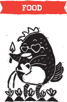

|  |  |
 |
 |
Being able to grow your own food means to be more self-sufficient, not being dependent on external market sources for food. It also means learning a practical skill for survival, knowledge for future generations.
By growing your own food, you know where it comes from, and not having to guess whether it was contaminated with pesticides or being genetically modified. It is thus a fresher and healthier option for you and your family.
And what could be more satisfying than eating the food that you grew from seed with your own hands?
Don't just stop there too. Instead of eating out or "dabao-ing" food home for dinner, try cooking for your family more often. If you're never cooked before, try something simple for a start. And the fun part is cooking with the veggies you've just harvested!
- You can easily get vegetable seeds and seedlings from your local nursery, farms or even gardening sections in some supermarkets.
- Get stuff that are easy to grow for a start, such as lettuce, bokchoy (baicai), and spinach (I call them 'the easy leafies').
- Most veggies can be grown in pots. Just make sure you place them somewhere with ample sunlight such as a sunny balcony or windowsill.
- Pay attention to the seed packet instructions on how to grow your chosen veggie.
- When in doubt, answers are always an internet search away.
- Here are some gardening videos by Nparks to get you started.

- Easier to go ethical | TODAYonline
- The GM genocide: Thousands of Indian farmers are commiting suicide after using genetically modified crops
- What does gardening have to do with the #Occupy Movement? | Tree Hugger
- Annie Novak's Eagle Street Rooftop Farm | UO Features
- One Million Gardens can change the world [video]
- Gardens of Eden: The heavenly horticulture blossoming on roofs high above the city | Mail Online
- Backyard food crusaders | Care2 Causes [video]
- Why local is the answer | Do Lectures [video]
- Gardening on the rise in economic hard times | Care2 Causes